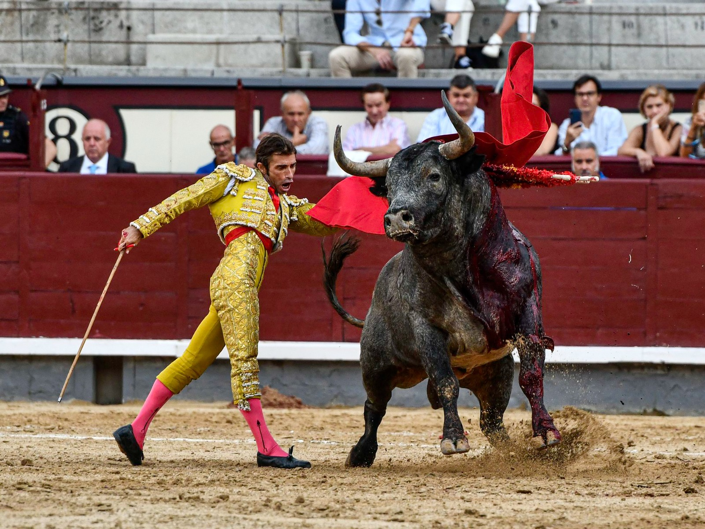

Balance de la temporada en Las Ventas: un año taurino aparentemente normal  La temporada de 2022 en la plaza de Las Ventas comenzó el 9 de marzo en un local de la madrileña calle Cartagena, donde Emilio de Justo convocó a un nutrido grupo de amigos para presentar su encerrona del 10 de abril ante seis toros de distintas ganaderías. “Quiero marcar una época en la historia del toreo”, dijo el torero aquella mañana, pródiga en abrazos, halagos y buenos deseos, en la que nada hacía presagiar el mal bajío que el destino le tenía reservado. Pero momentos antes del fatídico percance del Domingo de Ramos, en aquella abarrotada y conmovida plaza de Madrid, Emilio de Justo había protagonizado una labor vibrante e intensa, con capote y muleta, ante un toro encastado y fiero de Pallarés. Esa fue, sin duda, una de las faenas del año. Meses más tarde, cuando la temporada tocaba a su fin, la tarde del 18 de septiembre, en un desafío ganadero entre toros de Hoyo de la Gitana y José Escolar, y ante poco más de un cuarto de entrada en los tendidos, Fernando Robleño dibujó la obra soñada por todo aquel que tiene la dicha de vestir el traje de luces. Fue la faena de su vida, la de muchas temporadas de las Ventas ante un escolar de calidad suprema con el que hizo posible el misterio del toreo más exquisito. Y entre los sucesos de uno y otro, una temporada aparentemente normal después de la larga y dura travesía impuesta por la pandemia, salpicada de vértices imprevistos y anormales, propios, quizá, del paso del tiempo y su obligada huella en el devenir de una fiesta cada vez más acorralada por enemigos propios y externos. La ganadería de Fuente Ymbro ha lidiado 50 reses, una presencia abusiva, cansina e inexplicable El llamado toro de Madrid, ese de imponente trapío, está pasando, poco a poco, a la historia. Este año ha prevalecido la edad sobre la foto fija de un animal que llamaba la atención de salida por su estampa y hechuras, y han sido muchos los ejemplares lidiados que no hubieran pasado el veredicto de los reconocimientos en 2019. Un dato sorprendente y extraño del año ha sido la presencia abusiva y cansina de la ganadería de Fuente Ymbro, propiedad de Ricardo Gallardo: cuatro corridas y cinco novilladas, 50 reses lidiadas (23 toros y 27 novillos), sin motivos suficientemente aclarados por parte de la empresa que justificaran este empacho en detrimento de otros muchos hierros ganaderos. El palco presidencial está sumido en una disparidad de criterios que perjudica el desarrollo del espectáculo. Es cierto que los presidentes deben aplicar un reglamento que ya no responde a los cambios buenos y malos que han experimentado la tauromaquia y la sociedad; pero es exigible que la autoridad, que vela por la integridad y la pureza de los festejos, haga un examen de conciencia para que la sensatez sea el faro que guíe su gestión. La aparente realidad madrileña es que los criterios son tantos como el número de personas que suben al palco, y ese es, precisamente, el mal que se debe evitar. El abandono, la dejadez y la suciedad de las dependencias de la plaza de Las Ventas es una realidad tan evidente como incomprensible. La cacareada afición taurina de la propietaria del edificio —la Comunidad de Madrid— no concuerda con la desidia que se refleja en el necesario e imprescindible mantenimiento de unas paredes casi centenarias que piden a gritos una rehabilitación que no llega. ¡Y la afición…! Mejor dicho, el público… La mayoría de los espectadores que acude a la plaza de Madrid, otrora santuario y estandarte de la afición exigente, está contaminada por el virus del triunfalismo y empeñada en convertir los festejos taurinos en espectáculos divertidos, alejados de la seriedad que les es propia. Madrid ya no es lo que era, como no lo es Sevilla o cualquier otra plaza. A pesar de todo, la temporada de 2022 en Las Ventas también ha estado salpicada de momentos de intensa emoción, más allá de la valiente encerrona de Emilio de Justo y de la consumada obra de Fernando Robleño. Ahí están el magisterio de El Juli, la tarde del 11 de mayo, que dictó toda una lección de época oscurecida por el fallo con el estoque; el aldabonazo del novillero mexicano Isaac Fonseca, preludio de lo mucho que de él se espera; la entrega de Joselito Adame, el día que sufrió una espeluznante voltereta del mismo tenor que la que padeció De Justo, momentos después de que un casi desconocido Ángel Téllez dibujara unos hermosos naturales que le permitieron volver días más tarde para salir por la Puerta Grande. Roca Rey demostró el 19 de mayo su tremenda ansiedad por ser la figura del toreo que hoy se le reconoce; al día siguiente salió a hombros —generosamente, eso sí— un comprometido y esperanzador Tomás Rufo. Y Ureña solo pudo cortar una oreja el día de su obligada e injusta encerrona impuesta por la empresa. La afición exigente ha cedido el paso a un público triunfalista empeñado en convertir los festejos en espectáculos divertidos Daniel Luque confirmó una solidez que ha afianzado durante todo el año, Morante se mostró inspirado con un toro de Alcurrucén, y destacaron Román, Rafaelillo y Gómez del Pilar, que pasearon sendas orejas, los días 28 de mayo, 4 de junio, y 3 de julio, respectivamente. Hasta el 2 de septiembre no hizo público la Comunidad de Madrid la renovación del contrato de arrendamiento de la plaza, que volvía a recaer en la empresa Plaza 1, gestores desde el otoño de 2016. El compromiso tendrá una vigencia de cuatro años, prorrogables hasta un máximo de seis. El 18 de septiembre acaeció el suceso de Robleño; Adrián de Torres dijo el 2 de octubre que torea muy bien, pero que no ha aprobado la asignatura de la suerte suprema; el novillero Jorge Martínez se lució por naturales el 6 de octubre, y Francisco de Manuel y Roca Rey abrieron la Puerta Grande el 12 de octubre, día del cierre de la temporada. Durante todo el año hubo grandes toreros de plata en el ruedo; de entre todos ellos es de justicia destacar a Fernando Sánchez, rehiletero de oro, por sus numerosas actuaciones y triunfos reiterados en el tercio de banderillas. ¿Y los toros? La corrida de Garcigrande fue elegida la mejor del ciclo isidril. Hubo dos de vuelta al ruedo: Duplicado, de Victoriano del Río, que lidió el sobresaliente Álvaro de la Calle la tarde del percance de Emilio de Justo; y el novillo Embriagado, de Fuente Ymbro, al que le cortó las dos orejas Álvaro Alarcón el 23 de mayo. En el cuadro de honor también figuran el toro Matón, de Los Maños, lidiado el 25 de abril; Huracán, de Pedraza de Yeltes, el 15 de mayo; Garañuelo, de Victorino Martín, el 5 de junio y elegido como mejor toro de San Isidro; y Camionero de José Escolar, el 18 de septiembre. (¿Y qué fue de Talavante, que llegó a San Isidro como el mesías después de su retiro voluntario? Retirado sigue, pero esta vez forzado por su fracasada reaparición).